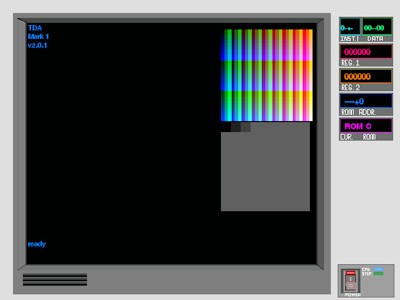
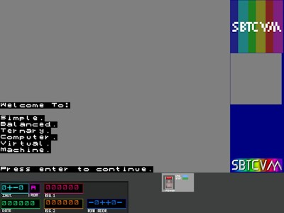

Simple Balanced Ternary Computer Virtual Machine
Project History
Manifesto - History
SBTCVM History
The Tale of SBTCVM |
|  | TDA Mark 1 SBTCVM's predecessor, with the placeholder name "TDA" meaning "Ternary Demo Architecure" literally reffering to the fact that TDA Mark 1 was more of a proof of concept than anything else. It was slow, and clunky. despite the diffrences, The code already had the familiar color and mono displays, the TTY, text encoding, status leds and readout displays. The assembler also started here. Though it remained a bit on the complicated, slow, and clunky side of things overall. some of SBTCVM's various quirks also started here. such as VM SYSHALT. Despite many advancements, Mark 2's architecture specification still traces back to this prototype. Begun: around September 2016 Status: Abandoned around October 2016 word length: 4-trit instructions, 6-trit data |
|  |
SBTCVM Mark 1.1 SBTCVM mark 1.1 is "ternary-compatible" (so to speak) with old TDA mark 1, as it primarily focused on cleaning up the codebase, and redesigning the User interface. you can also see the old rainbow logo in the margin of the screen. and a strangly placed status light panel. This is due to it not having been moved in time for this screenshot, as SBTCVM Mark 1.1 expaned the window size from 648x486 to 800x600. that logo in the color display is interesting... in the fact that it had to be plotted by hand... This is partly the reason SBTCVM mark 2 has its MK2-GFX.py graphics conversion toolkit. Its also notable for its short development time, and that its less prototype-ish. Begun: March 2017 Status: Abandoned March 2017 |
 |
SBTCVM Mark 2 This is the latest Incarnation of SBTCVM... it has many new features, huge speed improvements.... a far better assembler... more tools, a much more organized overall project, among other things... The UI looks better, The VM is BY FAR more capable, and is still actively developed. it introduces many new technologies, powerful operations like memory pointers, threading, and offset length control. and more... Begun: ~March 14 2017 Status: Ongoing |
| SBTCVM Mark ? Who knows what the future holds? well. for now we are working on SBTCVM mark 2, and researching on SBTCVM Mark 3... Mark 2.* Development: Ongoing. future mark 2.* series major versions are possible. Mark 3.* Development: Research and Some preliminary testing. Mark 4.* Development: Who knows... |
{kind=link}
{kind=link}